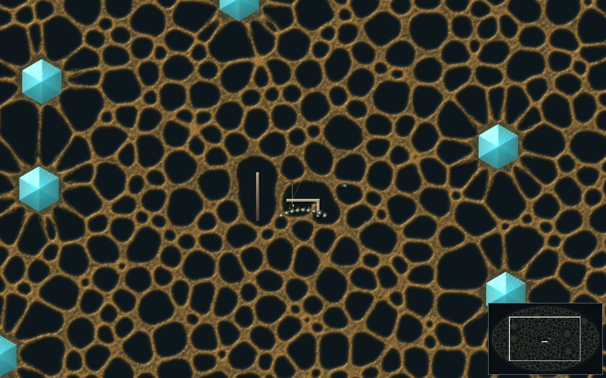
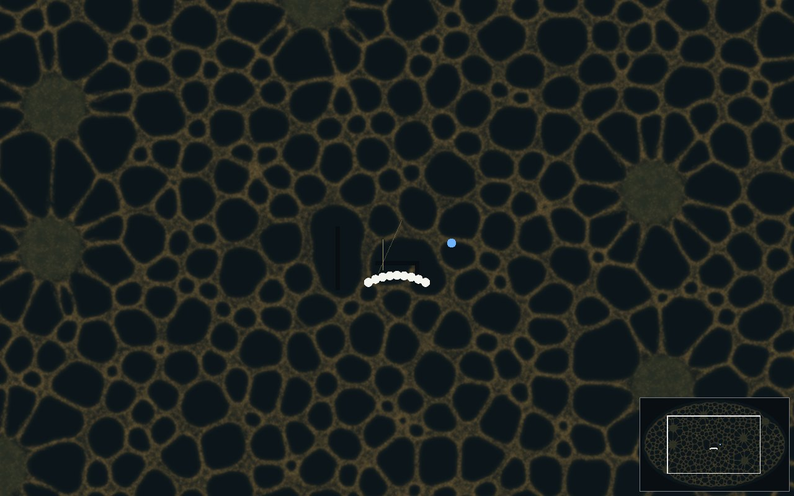
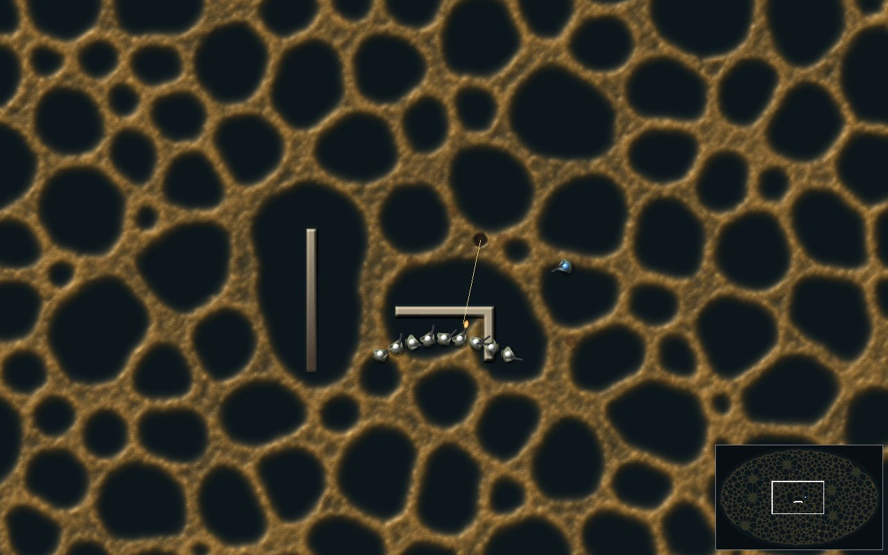
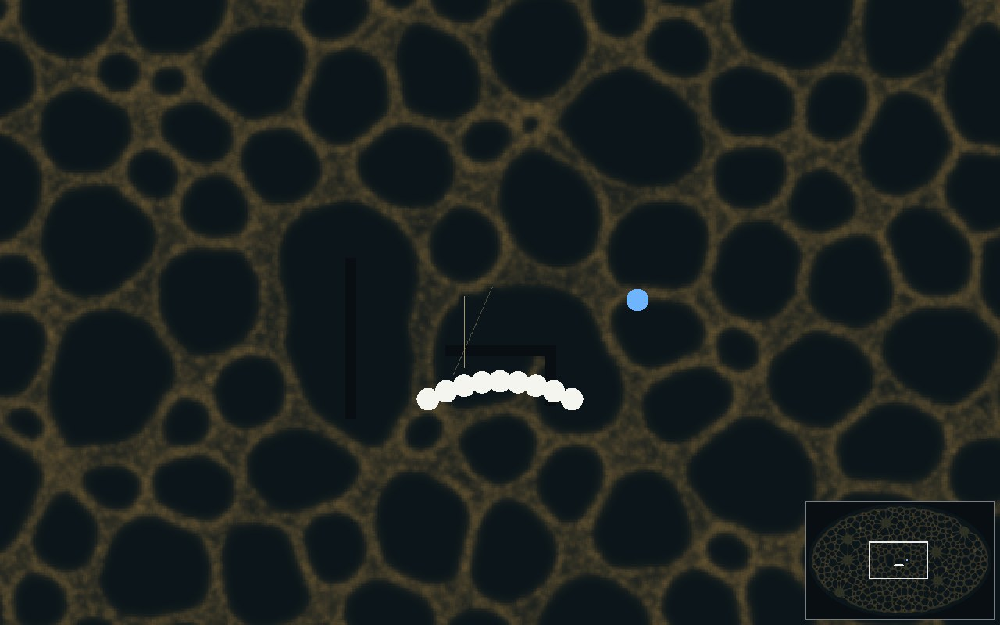
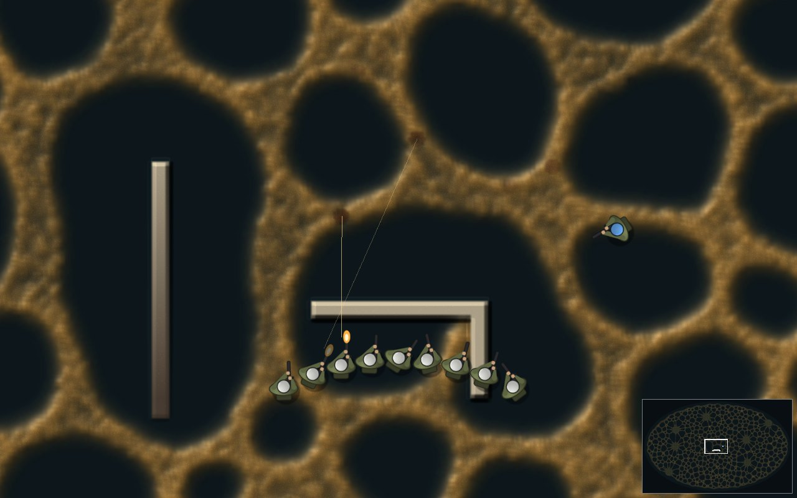
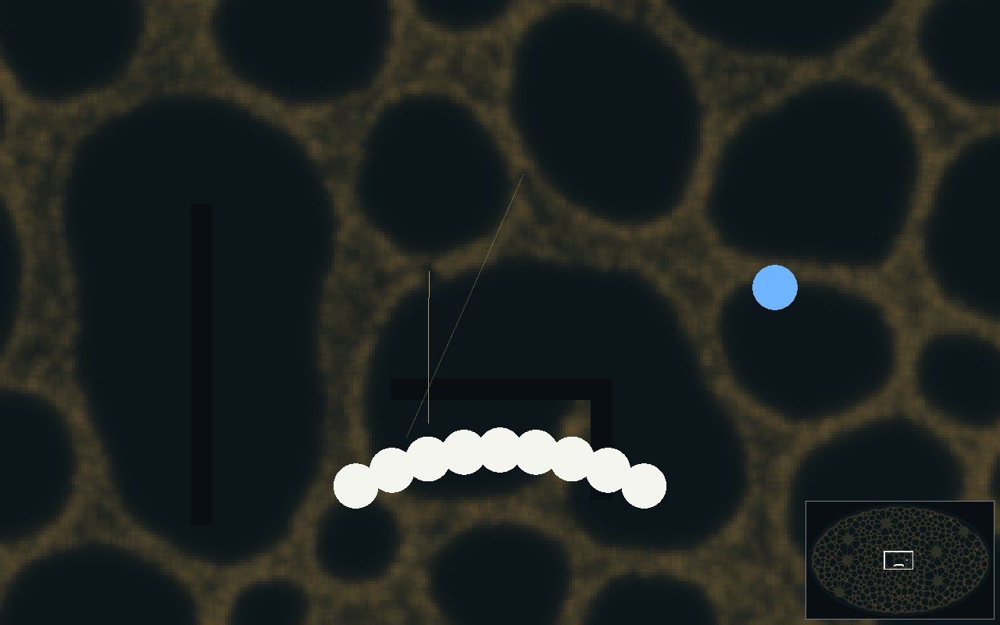
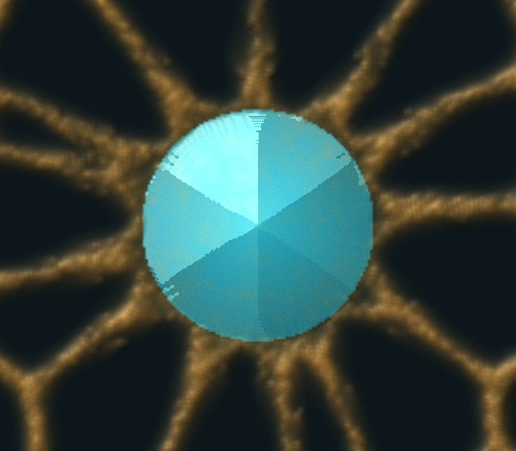
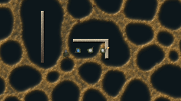
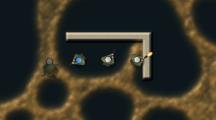
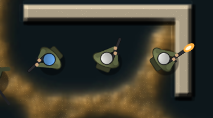

Everything below is one 2048 × 1280 world with 400,000 walkers, 10 seconds in, seed 1, then 4 seconds of a squad firing into the mould. The mould's look comes from its own fields: thickness sets height, gloss and colour strength, every walker is a speck at its real position, and a shot cuts the trail in the engine and leaves a burn the size of what it destroyed. Walls stand as tall as their health, and crystals as tall as their charge. Bare ground is soil with the simulation's scent and species tints on it, rock is the dish's own terrain (the mould cannot enter it), and wet ground is glossy water. Soldiers are the SVG sprite you picked, posed by the game.
Pictures rendered on the software GPU in the cloud; timed on the GTX 1070.
The same frame both ways. Left is the look on. Right is the view as it was: the engine's colour frame, nearest-sampled, with soldiers as discs.







You asked how well the mould gets round rock and walls when it starts in one place. The honest answer for today's mould: it barely sets out. These are 60 seconds from a start on its home crystal, 150,000 walkers, with the Larder world's rock, wet ground and a wall now in the simulation itself. The mould stays the blob it starts as, sends two or three thin tubes that follow the rock's edges, and chews the wall it is pressed against (1,611 wall cells broken). Open ground (right) goes the same way: 3 of 7 crystals reached in both, the 2 nearest being inside the starting blob's reach. A mould that spreads out needs to grow by eating crystals, which is the Larder world's next step (its race start); this test is ready to rerun then.
The blob was my start, not the model. Packed at one walker a cell, the walkers had nowhere to step and smelled the same thick trail all round, so nothing led outward. Here the same world starts with 30,000 grazing walkers loosely spread in a small disc in the middle (the creature thread's food-reach settings). It becomes a network at once, flows round the rock and along its edges, and finds every crystal in under a minute. The wall (above right of the start) costs the crystal behind it 10 s: the mould goes round it.
You picked A, the SVG sprite, over the shader-drawn figure (16:48Z). Soldiers are now that sprite, rotated to face where they aim. The helmet is tinted in the team's colour, the muzzle flash shows while a shot leaves, and dead soldiers lie on their backs. The shadow falls with the world's light. The 32 px copy of each sprite is used below 12 px, so small soldiers don't shimmer.



| On screen | Comes from | Where |
|---|---|---|
| Mould colour, height and gloss | Trail brightness a cell (the same number as the colour ramp) | engine look field, byte 0 |
| Specks | Every walker at its real position, a speck each | engine walkers |
| Burns | Thickness a hit removed, fading in the engine | engine look field, byte 2 |
| Ground tint | Scent, species, germ and grass, as the engine colours them | engine frame |
| Walls | Height and brightness from health | ground field, kind 3 |
| Crystals | Height, glow and brightness from charge; shape from depth inside | ground field, kind 5 |
| Rock, wet ground | Terrain kinds | ground field, kinds 2 and 1 |
| Soldier pose | Position, facing, team, alive or dead | game marks |
| Tracer and flash | A shot's line to where it stopped (the first slime or rock on it) and its timer (0.09 s, 0.07 s) | game marks, first_hit |
The ground field (a kind and a value a cell) is what the Larder world fills from its own walls, health and crystal charge. In this test the walls are cells taken off the agar, so the mould really cannot cross them. The tall wall on the left has its health set by hand from full at the top to empty at the bottom, only to show the range.
cargo run --release --bin mouldgpu, then W for the big world, Q for a squad, and L to switch the look.